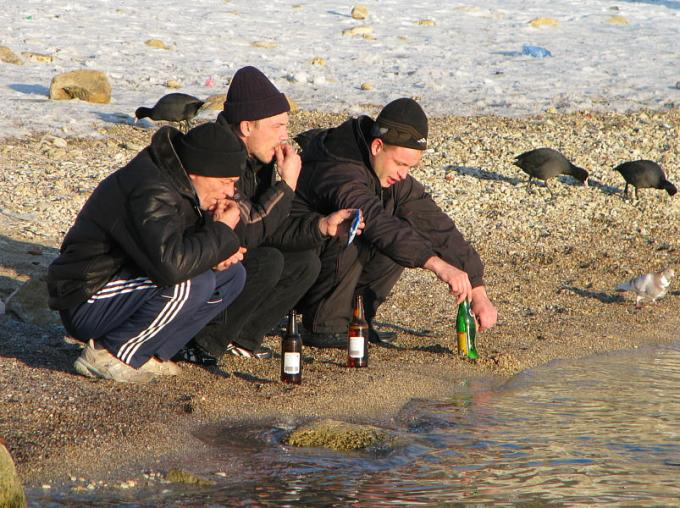

W zdrowym ciele zdrowy duch!
Oto my. Gopniki z Czelabińska. Jedyna i niepowtarzalna grupa odwołująca się do rosyjskiej tradycji ludowej. Tak jest. Jedyna na świecie, anałogow w mirie - niet. Jak wiadomo w zdrowym ciele zdrowy duch. Dlatego uwielbiamy relaksować się na świeżym powietrzu. Nasza ulububiona miejscówka do picia wódki i piwa to plaża nad słonym jeziorem Perwoje na wysokości Czelabińskiego Traktornego Zawodu przy Prospekcie Lenina. Możesz nas tam spotkać w przykucu nad wodą, lub przy ognisku ze zużytych opon na daczach w Traktrosadzie-3. Czasem pijemy też przy torach obok stacji Churiłowo. Już chyba wiecie skąd jesteśmy. Tak jest. To my, chłopaki (i dziewczyna) z Traktorozawodskiego Rajona!
Nasze najważniejsze zainteresowania to wódka, piwo, dywany, przykuc, hardbasy i odzież sportowa. Nasze ulubiona marki to Adidas, Stolicznaja, DJ Blyatman no i oczywiście Czelabiński Traktornyj Zawod gdzie pracowali nasi ojcowie zanim nie przeszli na rentę inwalidzką. Zapraszamy do zwiedzania naszej strony. CYKA BLYAT!!!
Nasze ostatnie osiągnięcia!
Rowerowa przygoda Wani
Kilka dni temu Wania wrócił z Milicji. Po co tam był? Po zaświadczenie. Pewnego wieczora w grudniu 2019 jechał on bowiem na rowerze ulicą 3-go Internacjonala i kiedy mijał milicyjną Ładę przykuł uwagę funkcjonariuszy. To co wydało im się dziwne to rajdowy styl jazdy Wanii. Rajdowy, albowiem nasz skarbnik grupowy jechał z wykorzystaniem całej szerokości drogi. Wania koniecznie chciał udać się po tym wszystkim na posterunek, gdzie otrzymał zaświadczenie: "Zaświadczamy że Iwan Sergiejewicz Makarow w dniu 19.12.2019 jechał na rowerze ulicą 3-go Internacjonala mając 8.2 promila alkoholu w wydychanym powietrzu". 8.2 i jeszcze na rowerze jechałem chwali się nasz Wania. Oj Wania, Wania. Przez tą przygodę nie przywiozłeś nam w końcu ze sklepu wódki...
Nowy przyjaciel Miszy... też Misza!
W listopadzie Misza zdobył nowego przyjaciela, a my członka grupy. A działo się to podczas pieczenia kurczaków na daczy która należy do ojca naszego Anatolija i znajduje się w Traktorsadzie-3. Misza który mocno już się rozgrzał (jeżeli wiecie o co mi chodzi) przysnął przy ognisku. Kiedy poszliśmy wszyscy grupowo w krzaki zostawiając śpiocha przy ciepełku palących się butelek PET, do naszego junaka podszedł niedźwiedź. Trochę się zdziwiliśmy jak wróciliśmy, bo niedżwiedzie rzadko pojawiają się tak bardzo na południe na naszym czelabińskim lasostepie, a tym bardziej w listopadzie kiedy powinny już dawno spać, ale cóż było począć. Tymczasem miś zaczął kosztować trunek z niedopitej butelki Miszy. Tak nas to rozbawiło że zaczęliśmy krzyczeć rozbawieni: Miszka, Miszka, wodke pitjewoj! Na tą salwę śmiechu obudził się nasz Misza myśląc że go wołamy, popatrzył na niedżwiedzia, poklepał go po plecach, po czym obaj legli w pijackim śnie. Od tego dnia mamy w grupie Miszę i Miszkę, bo niedżwiedziowi tak się spodobało że zamieszkał na daczy. Ojciec Anatolija nie ma nic przeciwko, bo Miszka odstrasza potencjalnych windykatorów którzy chcieliby przejąc daczę za niespłacone wobec Rosbanku zaległości.